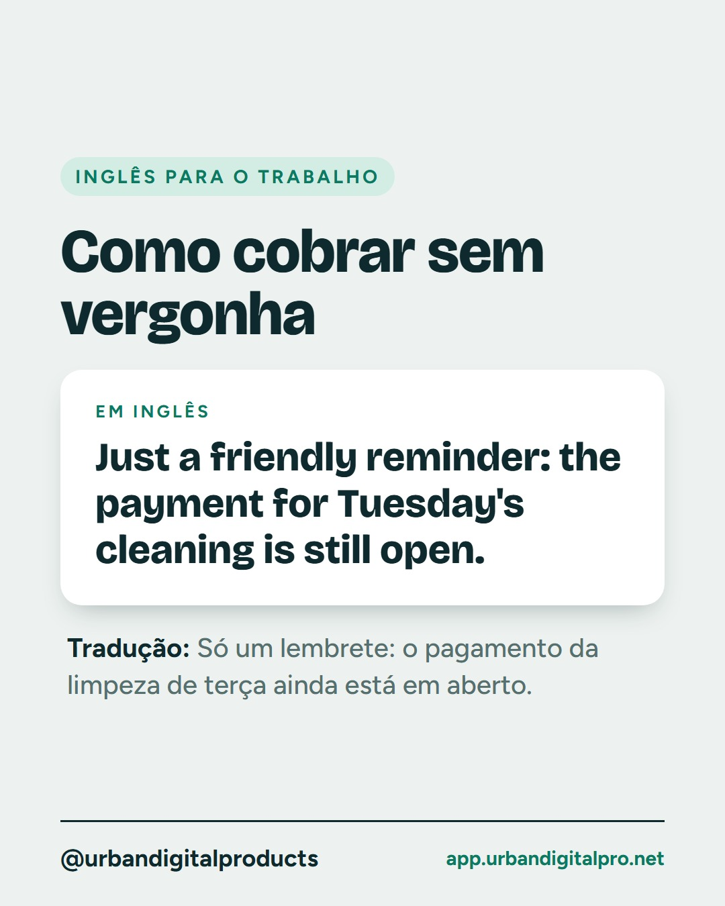
Cliente esqueceu de pagar e você trava na hora de cobrar em inglês? Use essa frase. "Friendly reminder" é educado, profissional e o americano entende na hora que é cobrança. 🇺🇸 Just a friendly reminder: the payment for Tuesday's cleaning is still open. 🇧🇷 Só um lembrete: o pagamento da limpeza de terça ainda está em aberto. Salva esse post pra usar na próxima vez. 💬 Comenta ORÇAMENTO que eu te mando o link. 📲 Teste grátis por 7 dias: app.urbandigitalpro.net (link na bio) #brasileirosnoseua #limpezanoseua #housecleaning #cleaningbusiness #brasileirosnaflorida
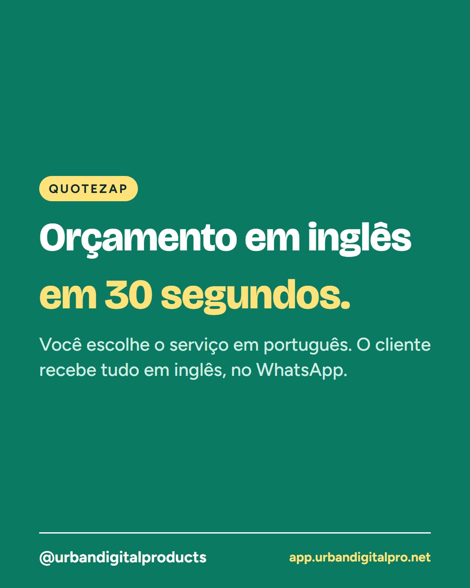
Quanto tempo você leva pra montar um orçamento em inglês? No QuoteZap você escolhe o serviço, o tamanho da casa e os extras, em português. Ele monta o orçamento com os SEUS preços e gera a mensagem pronta em inglês pra mandar no WhatsApp do cliente. Sem tradutor. Sem medo de errar o inglês. 💬 Comenta ORÇAMENTO que eu te mando o link. 📲 Teste grátis por 7 dias: app.urbandigitalpro.net (link na bio) #faxinanoseua #brasileirosemorlando #cleaninglady #housecleaner #inglesparatrabalho
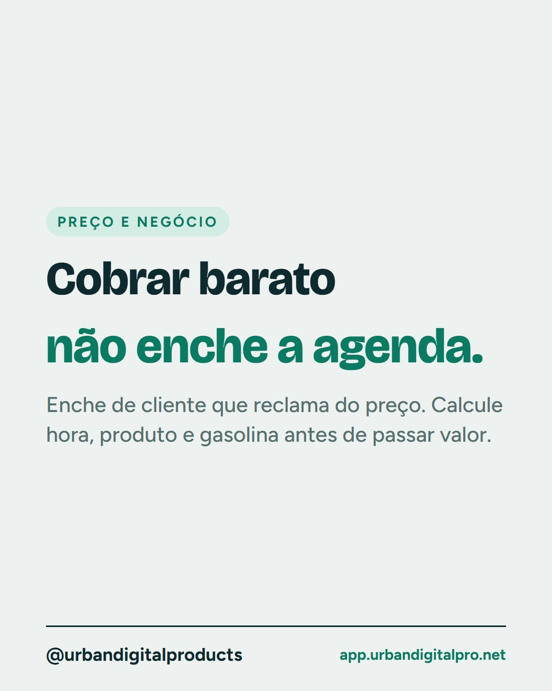
Muita gente começa cobrando barato pra pegar cliente. O problema é que o cliente que veio pelo preço vai embora pelo preço. Antes de passar qualquer valor, some: • quantas horas o serviço leva • quanto você gasta de produto • a gasolina até a casa • quanto você quer ganhar por hora Se não fecha a conta, não é cliente, é prejuízo. 💬 Comenta ORÇAMENTO que eu te mando o link. 📲 Teste grátis por 7 dias: app.urbandigitalpro.net (link na bio) #empreendedorbrasileiro #limpezaresidencial #airbnbcleaning #turnovercleaning #brasileirosnamerica
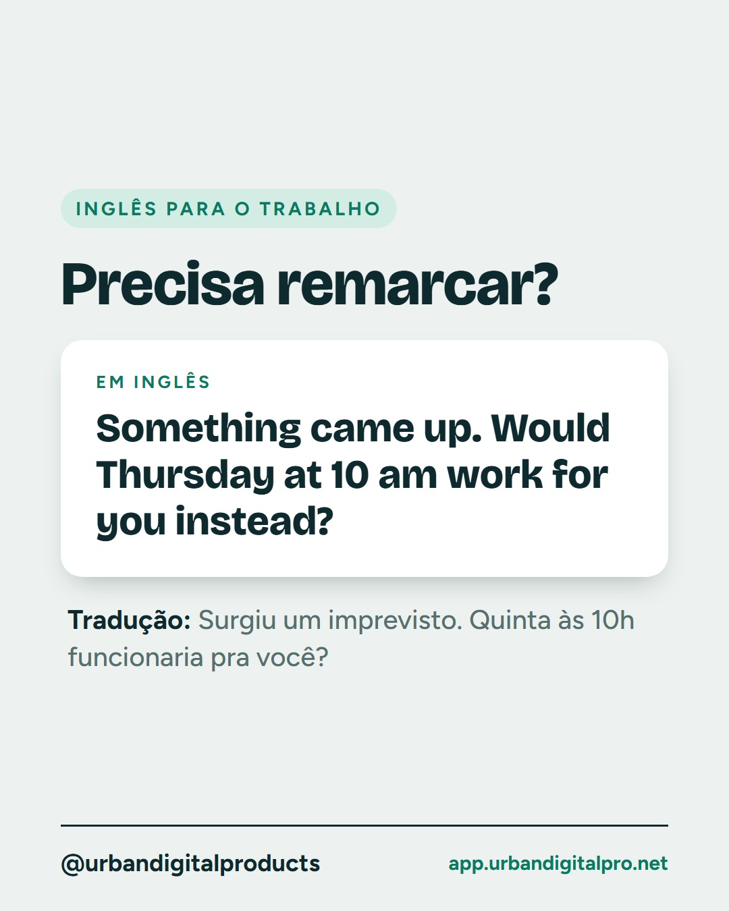
Teve um imprevisto e precisa trocar o dia da limpeza? Não precisa explicar demais. Avisa com antecedência e já oferece outro horário. O cliente americano valoriza quem resolve. 🇺🇸 Something came up. Would Thursday at 10 am work for you instead? 🇧🇷 Surgiu um imprevisto. Quinta às 10h funcionaria pra você? 💬 Comenta ORÇAMENTO que eu te mando o link. 📲 Teste grátis por 7 dias: app.urbandigitalpro.net (link na bio) #brasileirosnoseua #limpezanoseua #housecleaning #cleaningbusiness #brasileirosnaflorida
Mandar preço solto no WhatsApp funciona. Mandar um orçamento em PDF, com a sua logo e tudo detalhado, fecha mais. O cliente americano compara 3, 4 empresas. A que parece mais organizada sai na frente, mesmo não sendo a mais barata. No QuoteZap o PDF sai com o nome e a logo da sua empresa. 💬 Comenta ORÇAMENTO que eu te mando o link. 📲 Teste grátis por 7 dias: app.urbandigitalpro.net (link na bio) #faxinanoseua #brasileirosemorlando #cleaninglady #housecleaner #inglesparatrabalho
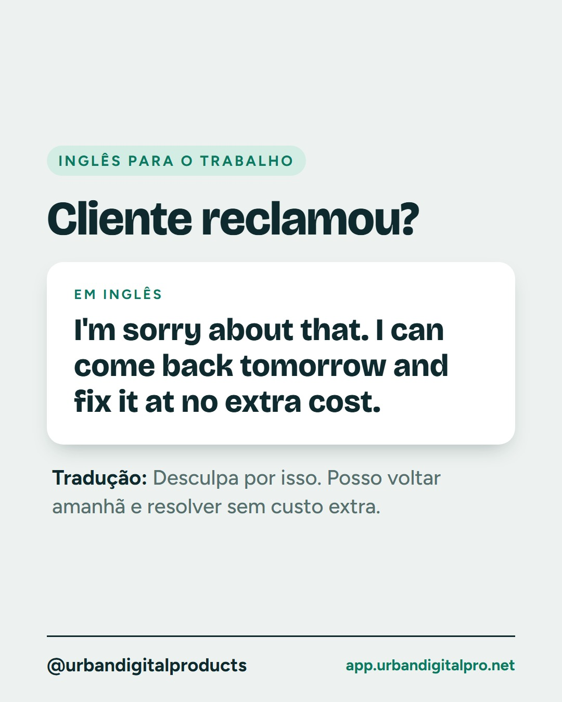
Cliente reclamou de um cantinho que ficou sujo. O que responder? Não discute, não se justifica demais. Pede desculpa e oferece a solução. É assim que cliente vira cliente fixo. 🇺🇸 I'm sorry about that. I can come back tomorrow and fix it at no extra cost. 🇧🇷 Desculpa por isso. Posso voltar amanhã e resolver sem custo extra. 💬 Comenta ORÇAMENTO que eu te mando o link. 📲 Teste grátis por 7 dias: app.urbandigitalpro.net (link na bio) #empreendedorbrasileiro #limpezaresidencial #airbnbcleaning #turnovercleaning #brasileirosnamerica
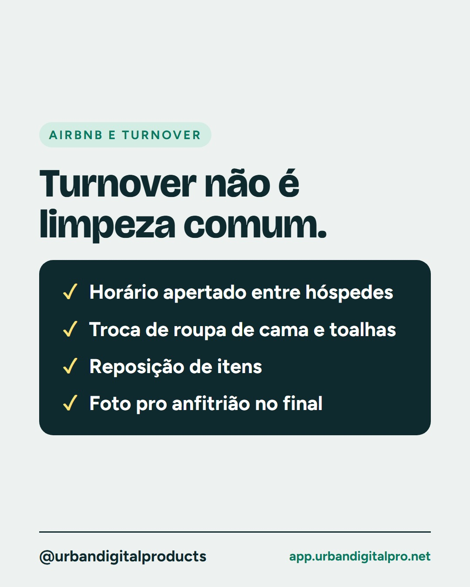
Limpeza de Airbnb (turnover) tem regras próprias, e precisa estar no preço. • Horário apertado entre a saída e a entrada do hóspede • Troca de roupa de cama e toalhas • Reposição de papel, sabonete, café • Foto de tudo pro anfitrião no final Se você cobra turnover igual limpeza normal, está trabalhando de graça em parte do serviço. 💬 Comenta ORÇAMENTO que eu te mando o link. 📲 Teste grátis por 7 dias: app.urbandigitalpro.net (link na bio) #brasileirosnoseua #limpezanoseua #housecleaning #cleaningbusiness #brasileirosnaflorida
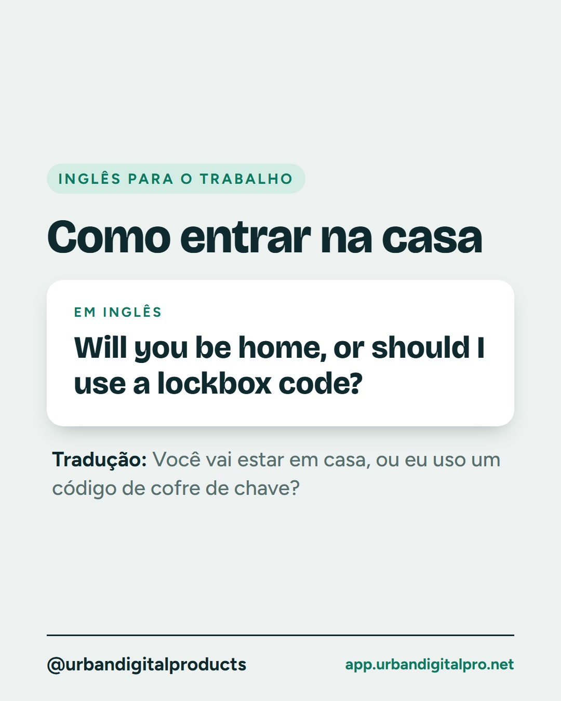
Primeira limpeza na casa nova. Como você vai entrar? Pergunta antes, pra não perder tempo na porta. 🇺🇸 Will you be home, or should I use a lockbox code? 🇧🇷 Você vai estar em casa, ou eu uso um código de cofre de chave? "Lockbox" é aquela caixinha com senha onde fica a chave. 💬 Comenta ORÇAMENTO que eu te mando o link. 📲 Teste grátis por 7 dias: app.urbandigitalpro.net (link na bio) #faxinanoseua #brasileirosemorlando #cleaninglady #housecleaner #inglesparatrabalho
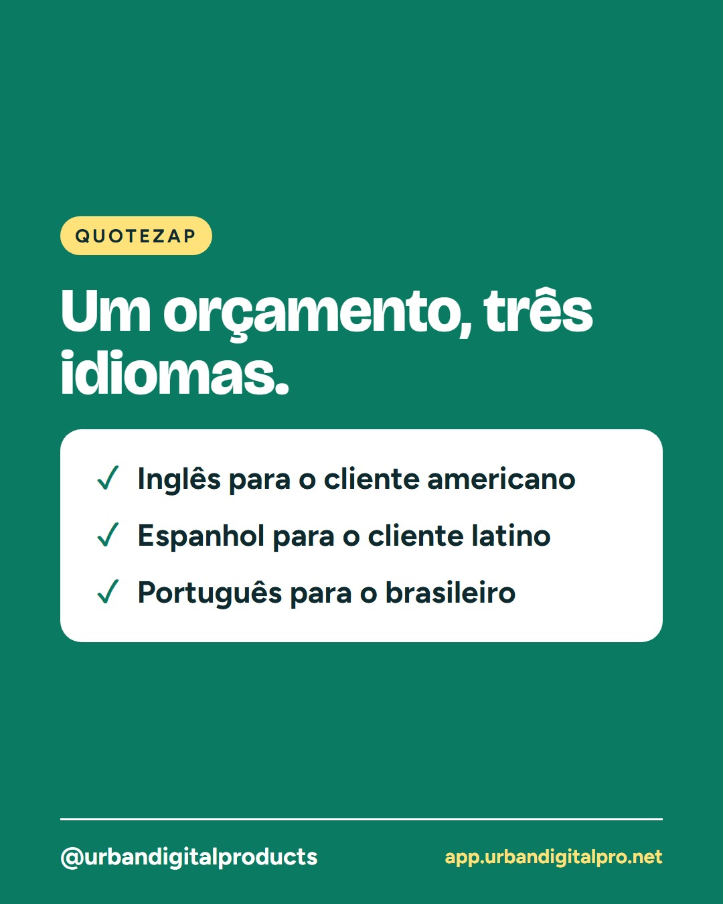
Seu cliente fala inglês. O próximo fala espanhol. O outro é brasileiro. No QuoteZap você monta o orçamento uma vez, em português, e escolhe em que idioma a mensagem sai: inglês, espanhol ou português. 💬 Comenta ORÇAMENTO que eu te mando o link. 📲 Teste grátis por 7 dias: app.urbandigitalpro.net (link na bio) #empreendedorbrasileiro #limpezaresidencial #airbnbcleaning #turnovercleaning #brasileirosnamerica
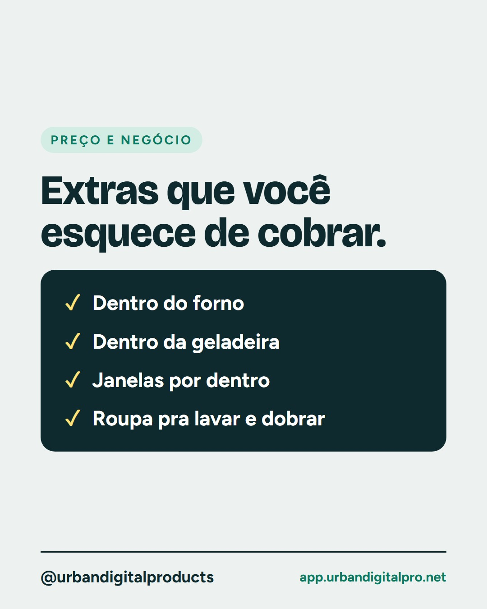
Esses serviços tomam tempo e muita gente faz "de brinde": • Dentro do forno • Dentro da geladeira • Janelas por dentro • Lavar e dobrar roupa Tudo isso é extra (add-on). Coloca na sua tabela com preço, e o cliente escolhe se quer. 💬 Comenta ORÇAMENTO que eu te mando o link. 📲 Teste grátis por 7 dias: app.urbandigitalpro.net (link na bio) #brasileirosnoseua #limpezanoseua #housecleaning #cleaningbusiness #brasileirosnaflorida
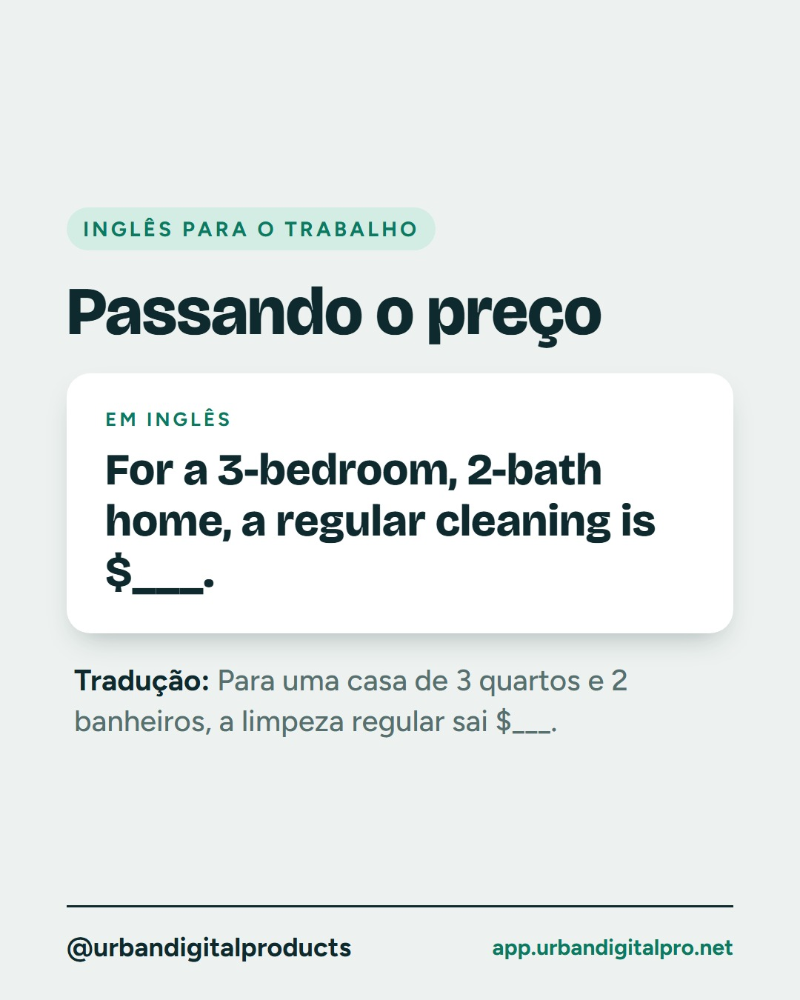
O cliente perguntou "how much?". Responde com segurança, sem gaguejar: 🇺🇸 For a 3-bedroom, 2-bath home, a regular cleaning is $___. 🇧🇷 Para uma casa de 3 quartos e 2 banheiros, a limpeza regular sai $___. Nos EUA casa se mede em quartos (bedrooms) e banheiros (baths). Completa com o seu preço. 💬 Comenta ORÇAMENTO que eu te mando o link. 📲 Teste grátis por 7 dias: app.urbandigitalpro.net (link na bio) #faxinanoseua #brasileirosemorlando #cleaninglady #housecleaner #inglesparatrabalho
O QuoteZap não inventa preço pra você. Você cadastra a sua tabela uma vez: quanto cobra por tamanho de casa, por tipo de limpeza (regular, deep clean, turnover, move-out) e pelos extras. Depois é só escolher e o orçamento sai certinho, toda vez. 💬 Comenta ORÇAMENTO que eu te mando o link. 📲 Teste grátis por 7 dias: app.urbandigitalpro.net (link na bio) #empreendedorbrasileiro #limpezaresidencial #airbnbcleaning #turnovercleaning #brasileirosnamerica
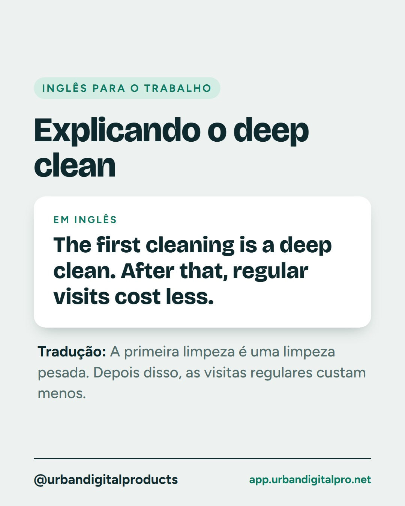
Cliente novo estranhou o preço da primeira limpeza? Explica assim: 🇺🇸 The first cleaning is a deep clean. After that, regular visits cost less. 🇧🇷 A primeira limpeza é uma limpeza pesada. Depois disso, as visitas regulares custam menos. Casa que nunca foi limpa por profissional dá mais trabalho na primeira vez. Isso é normal e o americano entende. 💬 Comenta ORÇAMENTO que eu te mando o link. 📲 Teste grátis por 7 dias: app.urbandigitalpro.net (link na bio) #brasileirosnoseua #limpezanoseua #housecleaning #cleaningbusiness #brasileirosnaflorida
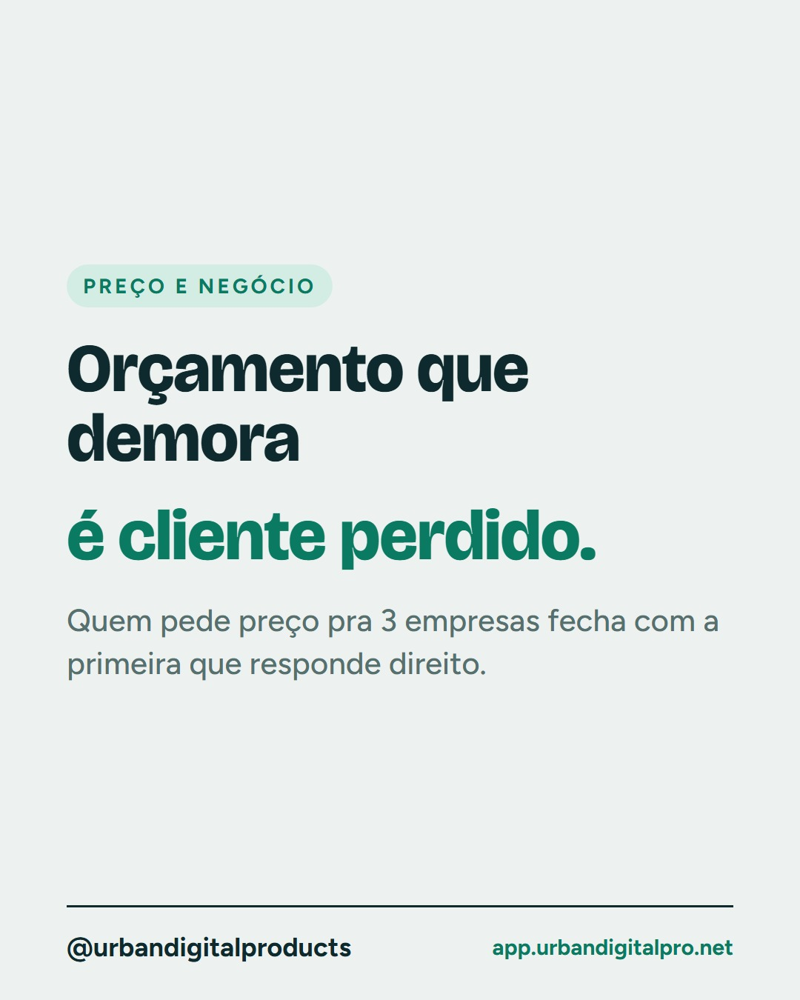
O cliente mandou mensagem pedindo preço. Você estava no meio de uma limpeza e respondeu 5 horas depois. Nessa hora ele já fechou com outra empresa. Quem responde rápido e bem organizado sai na frente. Deixe sua tabela pronta pra responder em minutos, mesmo no intervalo entre uma casa e outra. 💬 Comenta ORÇAMENTO que eu te mando o link. 📲 Teste grátis por 7 dias: app.urbandigitalpro.net (link na bio) #faxinanoseua #brasileirosemorlando #cleaninglady #housecleaner #inglesparatrabalho
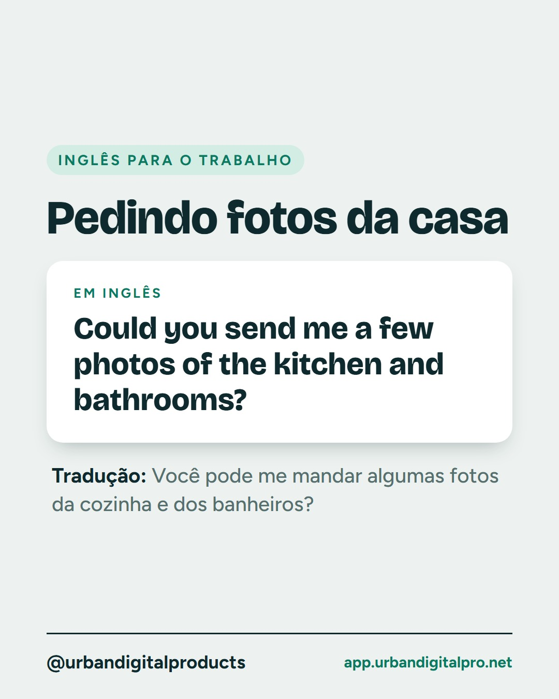
Não sabe se a casa está muito suja pra passar o preço? Pede foto antes. 🇺🇸 Could you send me a few photos of the kitchen and bathrooms? 🇧🇷 Você pode me mandar algumas fotos da cozinha e dos banheiros? Cozinha e banheiro mostram o estado da casa. Assim você não erra o preço. 💬 Comenta ORÇAMENTO que eu te mando o link. 📲 Teste grátis por 7 dias: app.urbandigitalpro.net (link na bio) #empreendedorbrasileiro #limpezaresidencial #airbnbcleaning #turnovercleaning #brasileirosnamerica
Como o QuoteZap funciona, em 3 passos: 1. Escolhe o serviço e o tamanho da casa 2. Marca os extras (forno, geladeira, janelas...) 3. Manda no WhatsApp do cliente, no idioma dele Funciona direto no celular, sem instalar nada. 💬 Comenta ORÇAMENTO que eu te mando o link. 📲 Teste grátis por 7 dias: app.urbandigitalpro.net (link na bio) #brasileirosnoseua #limpezanoseua #housecleaning #cleaningbusiness #brasileirosnaflorida
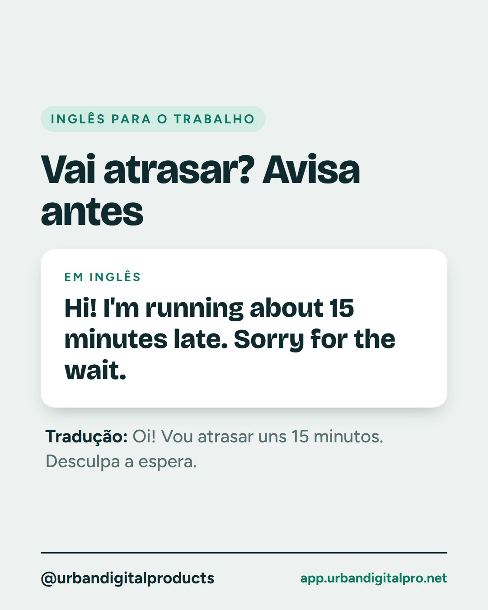
Trânsito na I-4 de novo? Avisa antes do horário, não depois. 🇺🇸 Hi! I'm running about 15 minutes late. Sorry for the wait. 🇧🇷 Oi! Vou atrasar uns 15 minutos. Desculpa a espera. "Running late" é o jeito natural de dizer que vai atrasar. 💬 Comenta ORÇAMENTO que eu te mando o link. 📲 Teste grátis por 7 dias: app.urbandigitalpro.net (link na bio) #faxinanoseua #brasileirosemorlando #cleaninglady #housecleaner #inglesparatrabalho
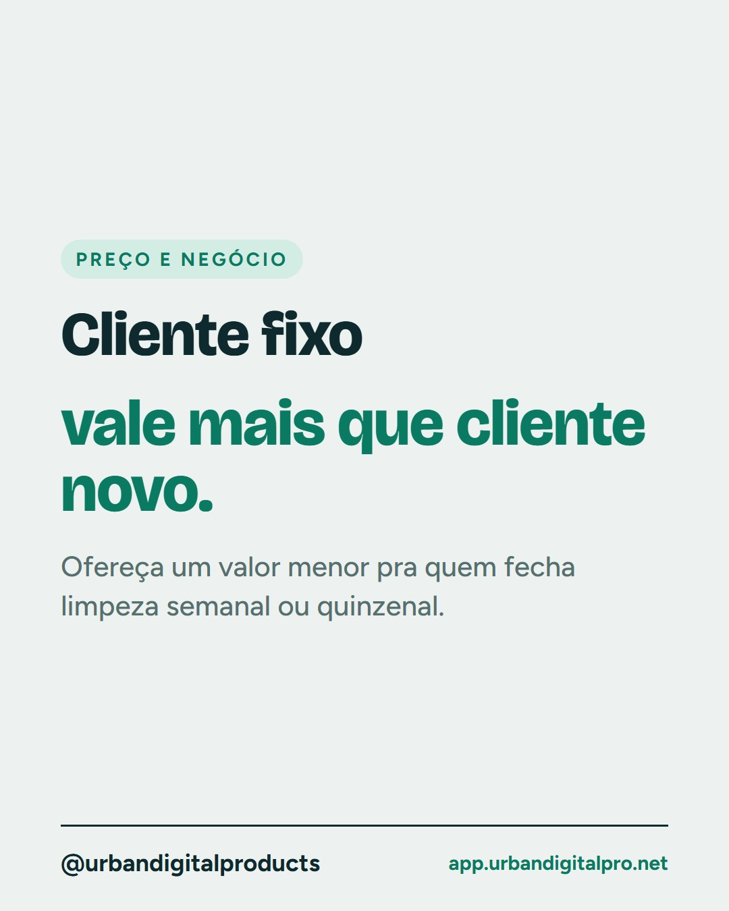
Cliente que faz limpeza toda semana ou a cada 15 dias é o que segura sua agenda. Uma ideia: tenha um preço pra limpeza única e um preço menor pra quem fecha recorrente (weekly, bi-weekly). Você ganha um pouco menos por limpeza, mas ganha previsibilidade e para de correr atrás de cliente toda semana. 💬 Comenta ORÇAMENTO que eu te mando o link. 📲 Teste grátis por 7 dias: app.urbandigitalpro.net (link na bio) #empreendedorbrasileiro #limpezaresidencial #airbnbcleaning #turnovercleaning #brasileirosnamerica
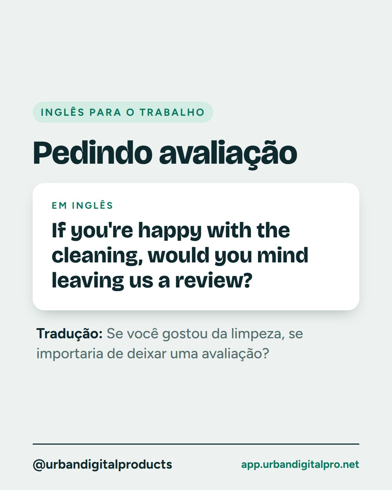
Cliente elogiou o serviço? Aproveita e pede avaliação no Google. É o que traz cliente novo de graça. 🇺🇸 If you're happy with the cleaning, would you mind leaving us a review? 🇧🇷 Se você gostou da limpeza, se importaria de deixar uma avaliação? 💬 Comenta ORÇAMENTO que eu te mando o link. 📲 Teste grátis por 7 dias: app.urbandigitalpro.net (link na bio) #brasileirosnoseua #limpezanoseua #housecleaning #cleaningbusiness #brasileirosnaflorida
Quanto você ganha numa limpeza? Com uma limpeza fechada a mais por mês, o QuoteZap já se paga. $19 por mês, e você testa 7 dias grátis, com a sua tabela de preços. 💬 Comenta ORÇAMENTO que eu te mando o link. 📲 Teste grátis por 7 dias: app.urbandigitalpro.net (link na bio) #faxinanoseua #brasileirosemorlando #cleaninglady #housecleaner #inglesparatrabalho
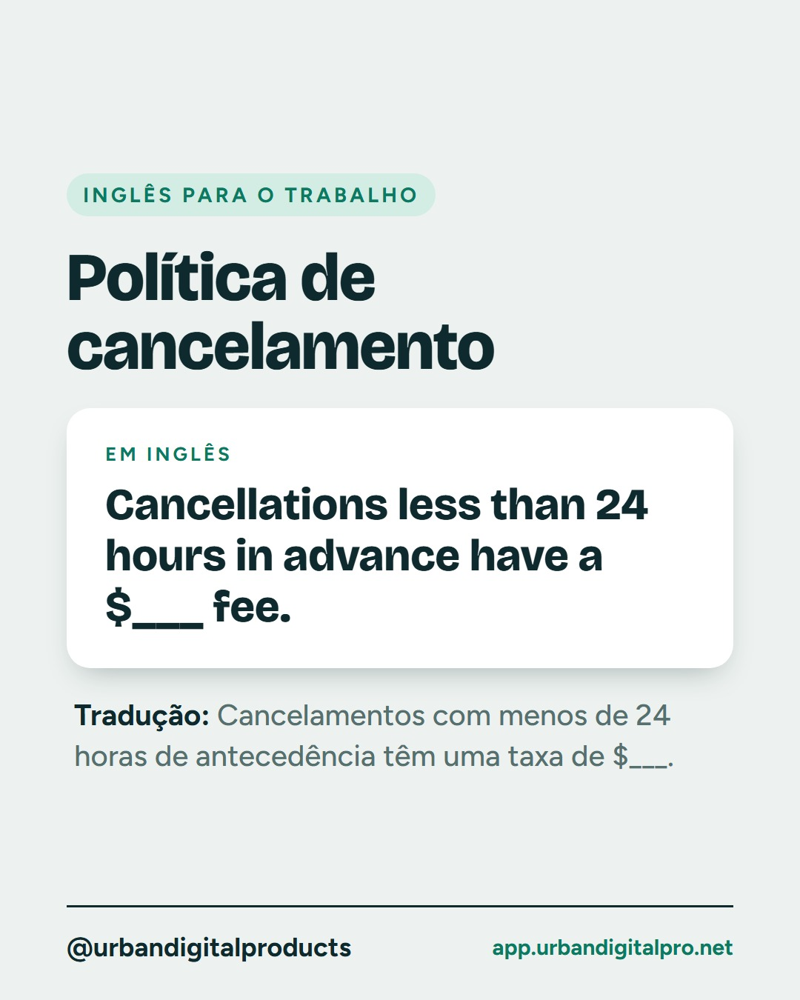
Cliente cancelou em cima da hora e você perdeu o dia? Tenha uma política de cancelamento e avisa antes do primeiro serviço. 🇺🇸 Cancellations less than 24 hours in advance have a $___ fee. 🇧🇷 Cancelamentos com menos de 24 horas de antecedência têm uma taxa de $___. Empresa organizada tem regra. E o cliente americano respeita regra. 💬 Comenta ORÇAMENTO que eu te mando o link. 📲 Teste grátis por 7 dias: app.urbandigitalpro.net (link na bio) #empreendedorbrasileiro #limpezaresidencial #airbnbcleaning #turnovercleaning #brasileirosnamerica
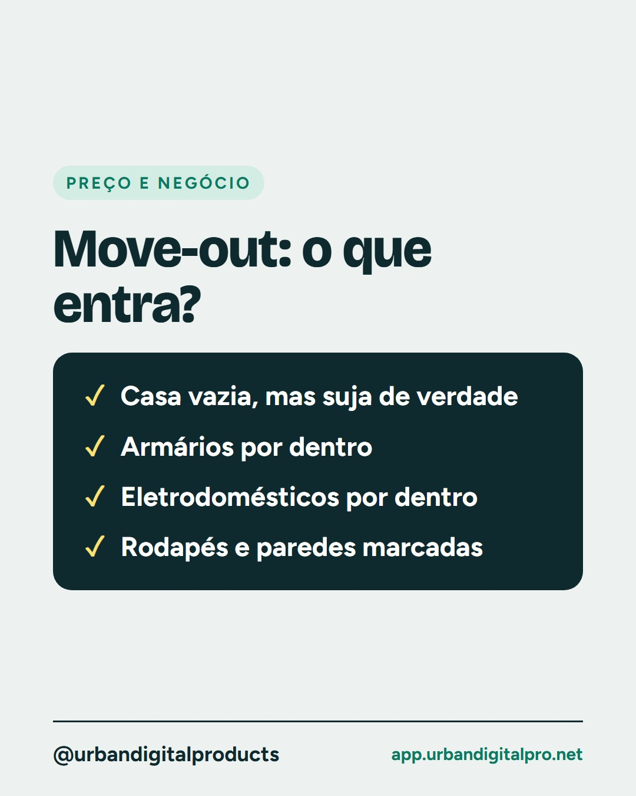
Limpeza de mudança (move-out) parece fácil porque a casa está vazia. Não é. • Sujeira que estava escondida atrás dos móveis • Armários por dentro • Forno e geladeira por dentro • Rodapés e marcas na parede Cobre move-out como serviço próprio, não como limpeza regular. 💬 Comenta ORÇAMENTO que eu te mando o link. 📲 Teste grátis por 7 dias: app.urbandigitalpro.net (link na bio) #brasileirosnoseua #limpezanoseua #housecleaning #cleaningbusiness #brasileirosnaflorida
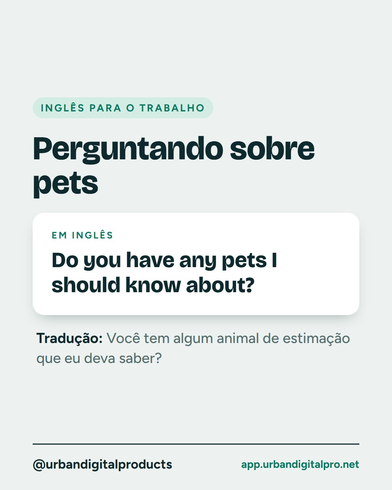
Pergunta antes da primeira limpeza. Cachorro solto, gato que foge, muito pelo no sofá: tudo isso muda o serviço (e o preço). 🇺🇸 Do you have any pets I should know about? 🇧🇷 Você tem algum animal de estimação que eu deva saber? 💬 Comenta ORÇAMENTO que eu te mando o link. 📲 Teste grátis por 7 dias: app.urbandigitalpro.net (link na bio) #faxinanoseua #brasileirosemorlando #cleaninglady #housecleaner #inglesparatrabalho
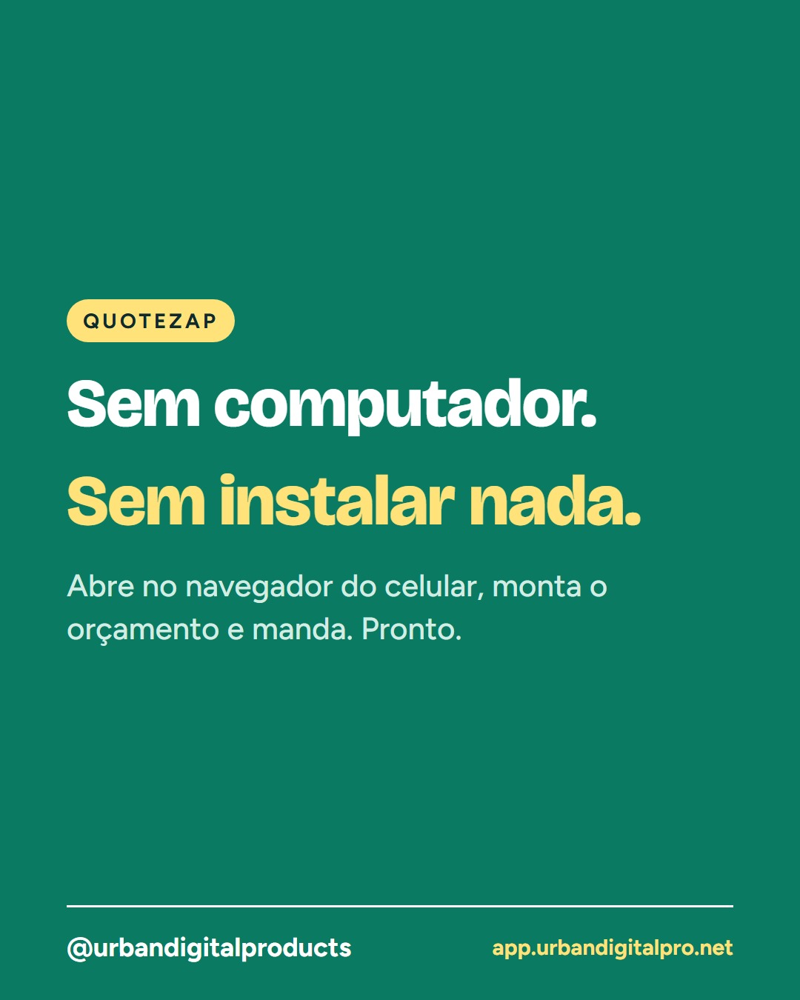
Você passa o dia na rua, de casa em casa. Não dá pra depender de computador. O QuoteZap abre direto no navegador do celular. Monta o orçamento e manda no WhatsApp do cliente entre uma limpeza e outra. 💬 Comenta ORÇAMENTO que eu te mando o link. 📲 Teste grátis por 7 dias: app.urbandigitalpro.net (link na bio) #empreendedorbrasileiro #limpezaresidencial #airbnbcleaning #turnovercleaning #brasileirosnamerica
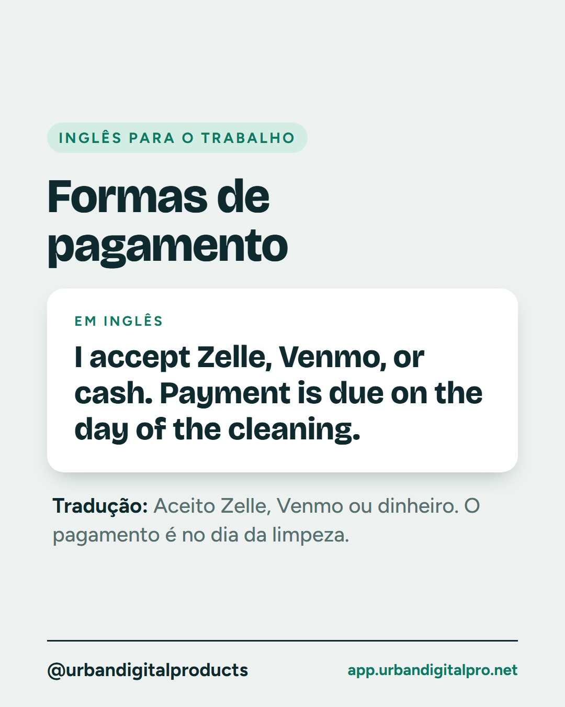
Deixa claro como e quando você recebe, antes da primeira limpeza. Evita dor de cabeça depois. 🇺🇸 I accept Zelle, Venmo, or cash. Payment is due on the day of the cleaning. 🇧🇷 Aceito Zelle, Venmo ou dinheiro. O pagamento é no dia da limpeza. Troca pelas formas que você aceita. 💬 Comenta ORÇAMENTO que eu te mando o link. 📲 Teste grátis por 7 dias: app.urbandigitalpro.net (link na bio) #brasileirosnoseua #limpezanoseua #housecleaning #cleaningbusiness #brasileirosnaflorida
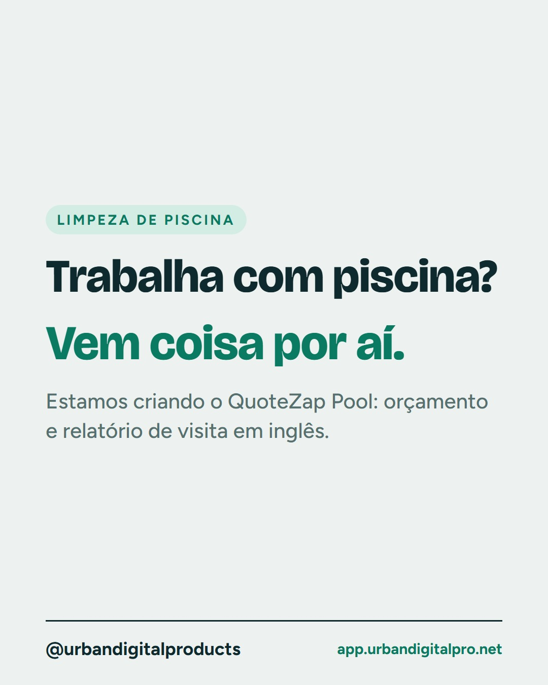
Você limpa piscina aqui nos EUA? Estamos criando o QuoteZap Pool: orçamento e relatório da visita (foto, cloro, pH) que chega pro cliente em inglês, no WhatsApp. Comenta PISCINA que eu te aviso quando ficar pronto. 💬 Comenta ORÇAMENTO que eu te mando o link. 📲 Teste grátis por 7 dias: app.urbandigitalpro.net (link na bio) #faxinanoseua #brasileirosemorlando #cleaninglady #housecleaner #inglesparatrabalho
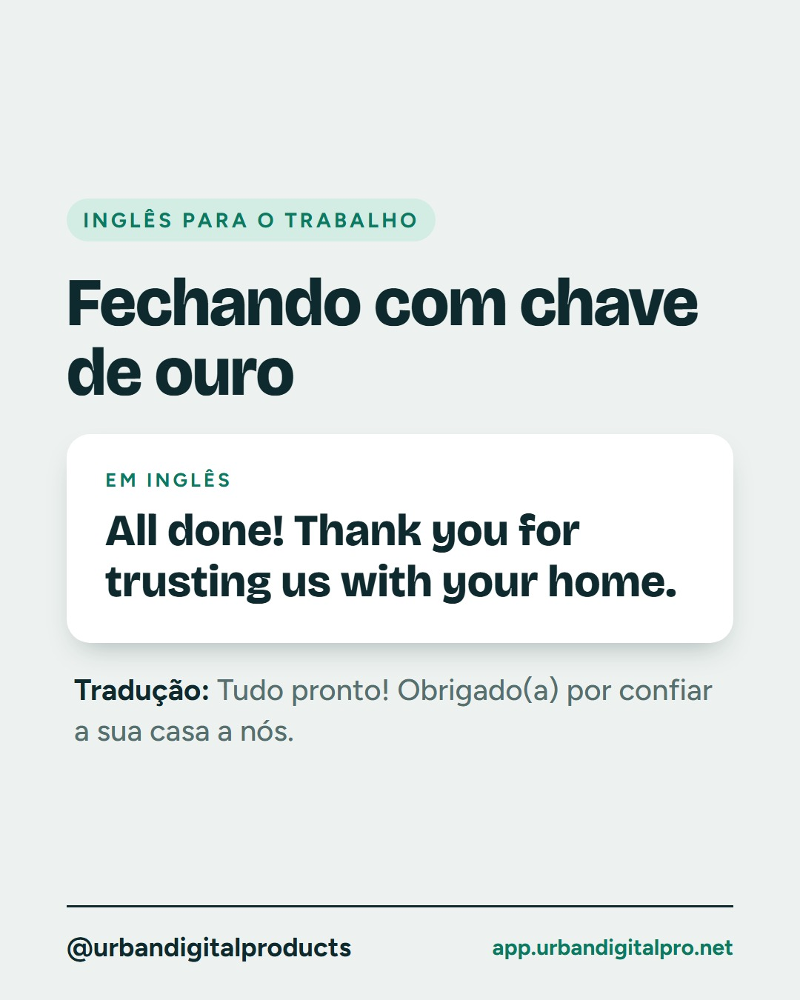
Terminou a limpeza? Manda uma mensagem curta no final. É o detalhe que faz o cliente lembrar de você. 🇺🇸 All done! Thank you for trusting us with your home. 🇧🇷 Tudo pronto! Obrigado(a) por confiar a sua casa a nós. 💬 Comenta ORÇAMENTO que eu te mando o link. 📲 Teste grátis por 7 dias: app.urbandigitalpro.net (link na bio) #empreendedorbrasileiro #limpezaresidencial #airbnbcleaning #turnovercleaning #brasileirosnamerica
Cliente satisfeito conhece vizinho, amigo, colega de trabalho que também precisa de limpeza. Uma ideia simples: ofereça um desconto na próxima limpeza pra quem indicar alguém que fechar com você. Em inglês: "referral discount". 💬 Comenta ORÇAMENTO que eu te mando o link. 📲 Teste grátis por 7 dias: app.urbandigitalpro.net (link na bio) #brasileirosnoseua #limpezanoseua #housecleaning #cleaningbusiness #brasileirosnaflorida
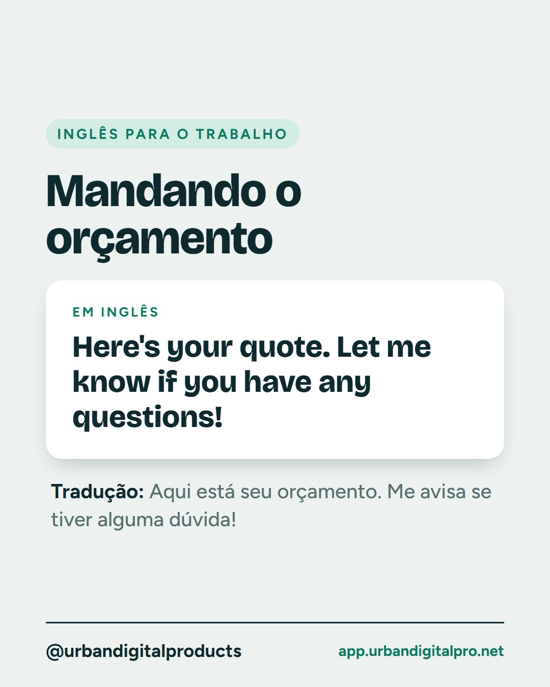
Mandou o orçamento? Fecha a mensagem assim, simples e simpático: 🇺🇸 Here's your quote. Let me know if you have any questions! 🇧🇷 Aqui está seu orçamento. Me avisa se tiver alguma dúvida! "Quote" é orçamento. Grava essa palavra. 💬 Comenta ORÇAMENTO que eu te mando o link. 📲 Teste grátis por 7 dias: app.urbandigitalpro.net (link na bio) #faxinanoseua #brasileirosemorlando #cleaninglady #housecleaner #inglesparatrabalho
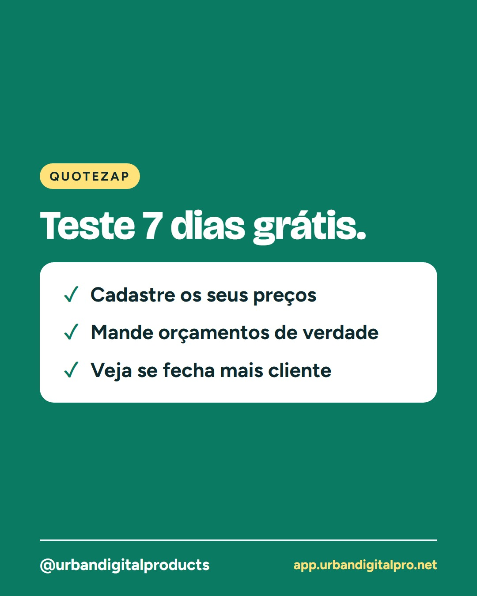
Não precisa acreditar em mim. Testa. 7 dias grátis, com os seus preços, mandando orçamento de verdade pros seus clientes. Se não fizer diferença, você não continua. 💬 Comenta ORÇAMENTO que eu te mando o link. 📲 Teste grátis por 7 dias: app.urbandigitalpro.net (link na bio) #empreendedorbrasileiro #limpezaresidencial #airbnbcleaning #turnovercleaning #brasileirosnamerica